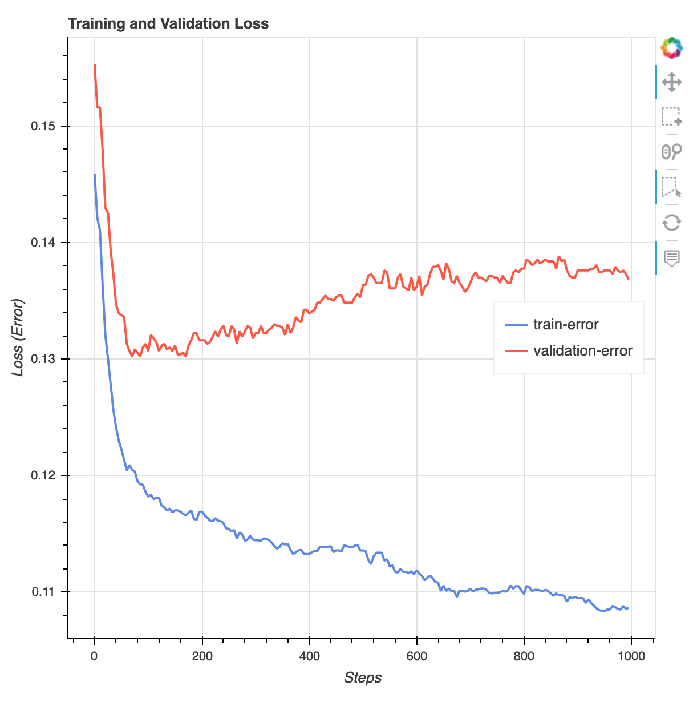

Step 4: Train a Model
The Amazon SageMaker Python SDK
Choose the Training Algorithm
To choose the right algorithm for your dataset, you typically need to evaluate different models to find the most suitable models to your data. For simplicity, the SageMaker XGBoost Algorithm built-in algorithm is used throughout this tutorial without the pre-evaluation of models.
Tip
If you want SageMaker to find an appropriate model for your tabular dataset, use Amazon SageMaker Autopilot that automates a machine learning solution. For more information, see SageMaker Autopilot.
Create and Run a Training Job
After you figured out which model to use, start constructing a SageMaker estimator for training. This tutorial uses the XGBoost built-in algorithm for the SageMaker generic estimator.
To run a model training job
-
Import the Amazon SageMaker Python SDK
and start by retrieving the basic information from your current SageMaker session. import sagemaker region = sagemaker.Session().boto_region_name print("AWS Region: {}".format(region)) role = sagemaker.get_execution_role() print("RoleArn: {}".format(role))This returns the following information:
-
region– The current AWS Region where the SageMaker notebook instance is running. -
role– The IAM role used by the notebook instance.
Note
Check the SageMaker Python SDK version by running
sagemaker.__version__. This tutorial is based onsagemaker>=2.20. If the SDK is outdated, install the latest version by running the following command:! pip install -qU sagemakerIf you run this installation in your exiting SageMaker Studio or notebook instances, you need to manually refresh the kernel to finish applying the version update.
-
-
Create an XGBoost estimator using the
sagemaker.estimator.Estimatorclass. In the following example code, the XGBoost estimator is namedxgb_model.from sagemaker.debugger import Rule, ProfilerRule, rule_configs from sagemaker.session import TrainingInput s3_output_location='s3://{}/{}/{}'.format(bucket, prefix, 'xgboost_model') container=sagemaker.image_uris.retrieve("xgboost", region, "1.2-1") print(container) xgb_model=sagemaker.estimator.Estimator( image_uri=container, role=role, instance_count=1, instance_type='ml.m4.xlarge', volume_size=5, output_path=s3_output_location, sagemaker_session=sagemaker.Session(), rules=[ Rule.sagemaker(rule_configs.create_xgboost_report()), ProfilerRule.sagemaker(rule_configs.ProfilerReport()) ] )To construct the SageMaker estimator, specify the following parameters:
-
image_uri– Specify the training container image URI. In this example, the SageMaker XGBoost training container URI is specified usingsagemaker.image_uris.retrieve. -
role– The AWS Identity and Access Management (IAM) role that SageMaker uses to perform tasks on your behalf (for example, reading training results, call model artifacts from Amazon S3, and writing training results to Amazon S3). -
instance_countandinstance_type– The type and number of Amazon EC2 ML compute instances to use for model training. For this training exercise, you use a singleml.m4.xlargeinstance, which has 4 CPUs, 16 GB of memory, an Amazon Elastic Block Store (Amazon EBS) storage, and a high network performance. For more information about EC2 compute instance types, see Amazon EC2 Instance Types. For more information about billing, see Amazon SageMaker pricing . -
volume_size– The size, in GB, of the EBS storage volume to attach to the training instance. This must be large enough to store training data if you useFilemode (Filemode is on by default). If you don't specify this parameter, its value defaults to 30. -
output_path– The path to the S3 bucket where SageMaker stores the model artifact and training results. -
sagemaker_session– The session object that manages interactions with SageMaker API operations and other AWS service that the training job uses. -
rules– Specify a list of SageMaker Debugger built-in rules. In this example, thecreate_xgboost_report()rule creates an XGBoost report that provides insights into the training progress and results, and theProfilerReport()rule creates a report regarding the EC2 compute resource utilization. For more information, see SageMaker Debugger XGBoost Training Report.
Tip
If you want to run distributed training of large sized deep learning models, such as convolutional neural networks (CNN) and natural language processing (NLP) models, use SageMaker Distributed for data parallelism or model parallelism. For more information, see Distributed training in Amazon SageMaker.
-
-
Set the hyperparameters for the XGBoost algorithm by calling the
set_hyperparametersmethod of the estimator. For a complete list of XGBoost hyperparameters, see XGBoost Hyperparameters.xgb_model.set_hyperparameters( max_depth = 5, eta = 0.2, gamma = 4, min_child_weight = 6, subsample = 0.7, objective = "binary:logistic", num_round = 1000 )Tip
You can also tune the hyperparameters using the SageMaker hyperparameter optimization feature. For more information, see Perform Automatic Model Tuning with SageMaker.
-
Use the
TrainingInputclass to configure a data input flow for training. The following example code shows how to configureTrainingInputobjects to use the training and validation datasets you uploaded to Amazon S3 in the Split the Dataset into Train, Validation, and Test Datasets section.from sagemaker.session import TrainingInput train_input = TrainingInput( "s3://{}/{}/{}".format(bucket, prefix, "data/train.csv"), content_type="csv" ) validation_input = TrainingInput( "s3://{}/{}/{}".format(bucket, prefix, "data/validation.csv"), content_type="csv" ) -
To start model training, call the estimator's
fitmethod with the training and validation datasets. By settingwait=True, thefitmethod displays progress logs and waits until training is complete.xgb_model.fit({"train": train_input, "validation": validation_input}, wait=True)For more information about model training, see Train a Model with Amazon SageMaker. This tutorial training job might take up to 10 minutes.
After the training job has done, you can download an XGBoost training report and a profiling report generated by SageMaker Debugger. The XGBoost training report offers you insights into the training progress and results, such as the loss function with respect to iteration, feature importance, confusion matrix, accuracy curves, and other statistical results of training. For example, you can find the following loss curve from the XGBoost training report which clearly indicates that there is an overfitting problem.
Run the following code to specify the S3 bucket URI where the Debugger training reports are generated and check if the reports exist.
rule_output_path = xgb_model.output_path + "/" + xgb_model.latest_training_job.job_name + "/rule-output" ! aws s3 ls {rule_output_path} --recursiveDownload the Debugger XGBoost training and profiling reports to the current workspace:
! aws s3 cp {rule_output_path} ./ --recursiveRun the following IPython script to get the file link of the XGBoost training report:
from IPython.display import FileLink, FileLinks display("Click link below to view the XGBoost Training report", FileLink("CreateXgboostReport/xgboost_report.html"))The following IPython script returns the file link of the Debugger profiling report that shows summaries and details of the EC2 instance resource utilization, system bottleneck detection results, and python operation profiling results:
profiler_report_name = [rule["RuleConfigurationName"] for rule in xgb_model.latest_training_job.rule_job_summary() if "Profiler" in rule["RuleConfigurationName"]][0] profiler_report_name display("Click link below to view the profiler report", FileLink(profiler_report_name+"/profiler-output/profiler-report.html"))Tip
If the HTML reports do not render plots in the JupyterLab view, you must choose Trust HTML at the top of the reports.
To identify training issues, such as overfitting, vanishing gradients, and other problems that prevents your model from converging, use SageMaker Debugger and take automated actions while prototyping and training your ML models. For more information, see Use Amazon SageMaker Debugger to debug and improve model performance. To find a complete analysis of model parameters, see the Explainability with Amazon SageMaker Debugger
example notebook.
You now have a trained XGBoost model. SageMaker stores the model artifact in your S3 bucket. To
find the location of the model artifact, run the following code to print the model_data
attribute of the xgb_model estimator:
xgb_model.model_data
Tip
To measure biases that can occur during each stage of the ML lifecycle (data collection, model
training and tuning, and monitoring of ML models deployed for prediction), use
SageMaker Clarify. For more information, see Amazon SageMaker Clarify Model Explainability.
For an end-to-end example, see the Fairness and Explainability with SageMaker Clarify